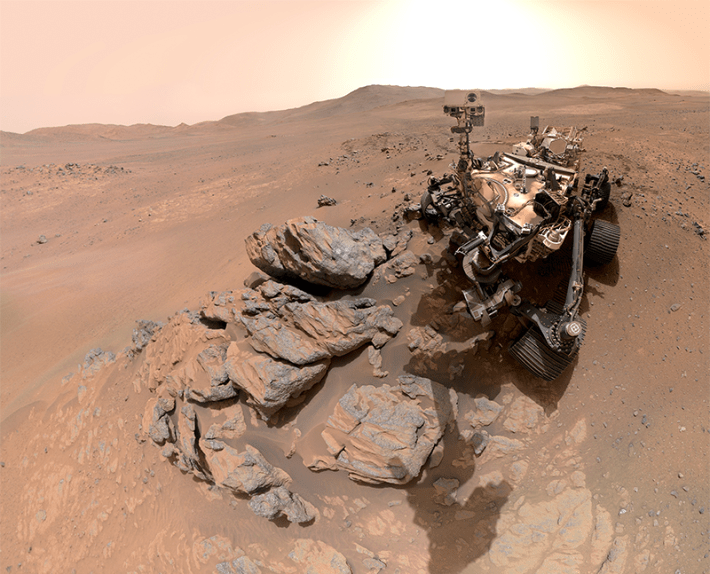
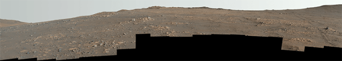
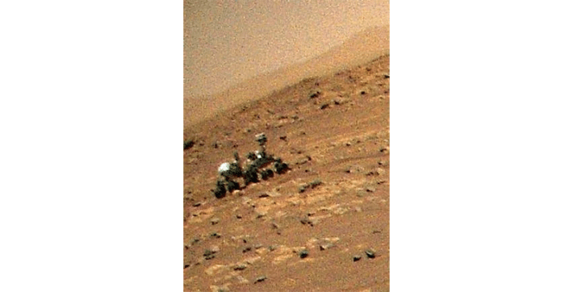

NASA’s Perseverance rover is busy analyzing the red planet’s geochemistry, but that doesn’t mean it doesn’t have time for a quick selfie. NASA recently published this image captured by the rover as it stood poised over a rock it just analyzed nicknamed “Arathusa.”
If you look closely at the uppermost outcropping, you can see the circular spot where Perseverance applied its abrasion tool.

ROCK STAR: The Mars Perseverance rover standing over the rock formation “Arathusa.” Credit: NASA/JPL-Caltech/MSSS.
“We took this image when the rover was in the ‘Wild West’ beyond the Jezero Crater rim—the farthest west we have been since we landed at Jezero a little over five years ago,” Perseverance project scientist Katie Stack Morgan said in a statement. “We had just abraded and analyzed the ‘Arathusa’ outcrop, and the rover was sitting in a spot that provided a great view of both the Jezero Rim and the local terrain outside of the crater.”
Read more: “A Mars Moon Rises at Dawn”
Of course, Perseverance doesn’t just take images of itself. The rover also captured this stunning vista of the Martian landscape, stitched together from 46 individual images taken with its binocular Mastcam-Z. According to NASA, this panorama offers a road map for the next steps in its investigation of the red planet. Among the rocks in the distance are massive fragments NASA believes were scattered from a meteorite impact 3.9 billion years ago.

Credit: NASA/JPL-Caltech/ASU/MSSS
In more terrestrial news, NASA engineers building the next Mars helicopter announced today that their prototype rotor blades broke the sound barrier—without breaking apart. The thin atmosphere on Mars means any drone that hopes to achieve liftoff there needs to generate a lot more thrust than its Earth-bound counterparts. With its faster blades, the next generation of Mars helicopter will be able to carry a heavier payload than Ingenuity, the drone that accompanied Perseverance until being permanently sidelined by a rough landing.
Before its untimely demise, Ingenuity at least managed to take one snapshot of its buddy.

Credit: NASA/JPL-Caltech
Hey, we all have that one friend that doesn’t take the best pictures. 
Enjoying Nautilus? Subscribe to our free newsletter.
Lead image: NASA/JPL-Caltech/MSSS